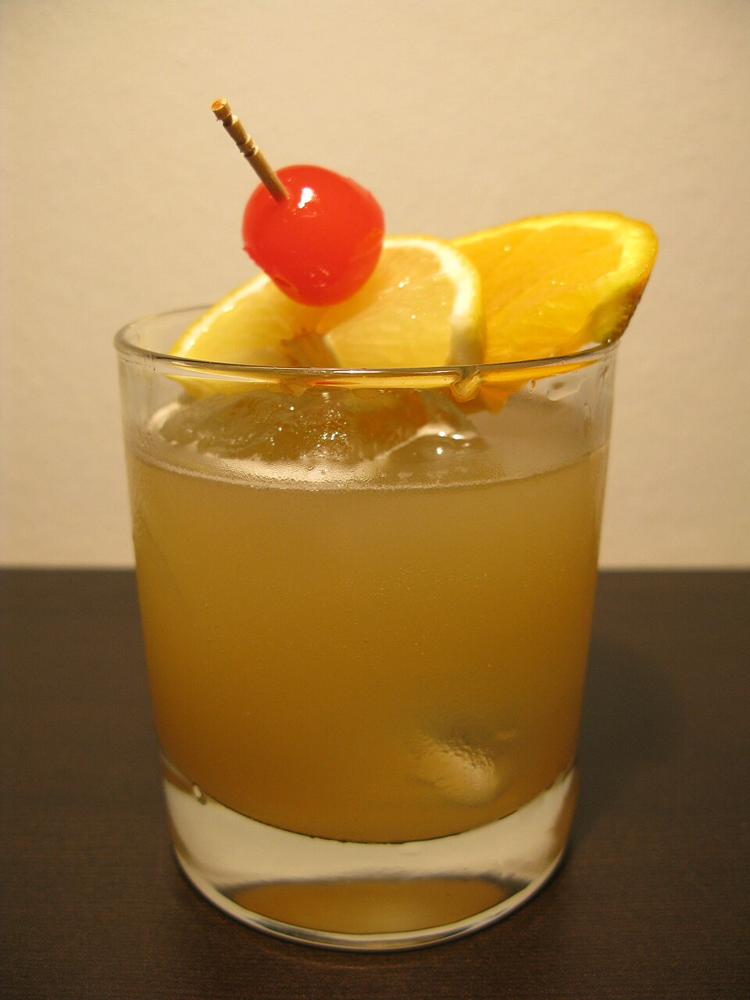

Allocated Bourbon Collection
Featuring rare Kentucky straight bourbons, wheated whiskeys, and single barrel expressions poured neat, on a hand-carved ice rock, or in house cocktails.
A world-class small plates kitchen requires a cocktail program of equal caliber. At The Teal Turnip, our bar combines an obsessively curated bourbon library with whimsical modern cocktail science—utilizing liquid nitrogen freeze techniques, house-made botanic reductions, and artisanal ice spheres.

Carefully selected mash bills, bespoke bitters, and sensory aroma techniques.
Featuring rare Kentucky straight bourbons, wheated whiskeys, and single barrel expressions poured neat, on a hand-carved ice rock, or in house cocktails.
We use cryogenic liquid nitrogen techniques to rapidly freeze fresh citrus oils, preserving volatile floral aromas that release over your glass as you sip.
Every Tuesday from 5:00 PM to 9:00 PM, our bar comes alive with intimate acoustic and jazz performances paired with craft cocktails and exclusive bar bites.

Our beverage directors work shoulder-to-shoulder with Chef Taylor Kastl to ensure that each spirit cut complements our savory plates. Whether pairing a high-rye spicy Manhattan with our rich "Belly Up to the Bar" smoked pork belly or sipping a delicate citrus sour alongside Cajun salmon, the harmony is unmistakable.
View Food & Bar Menu →